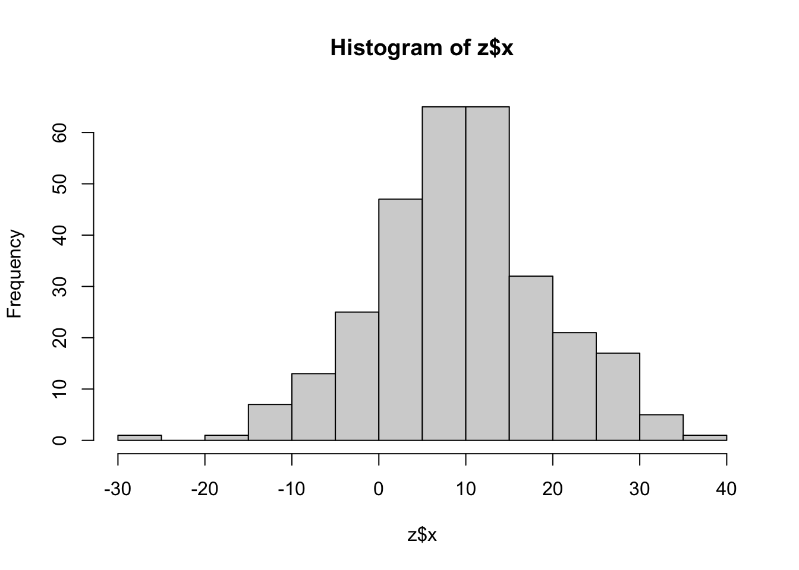
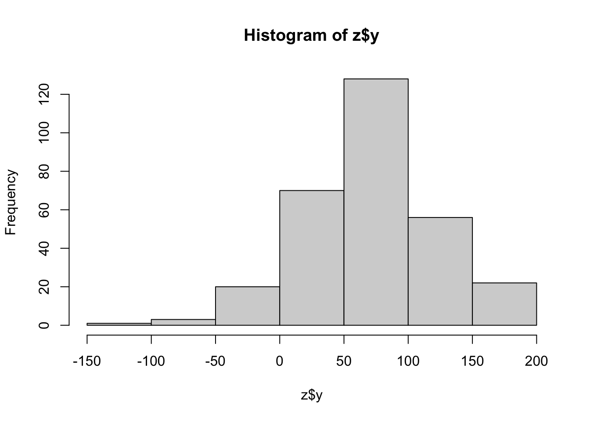
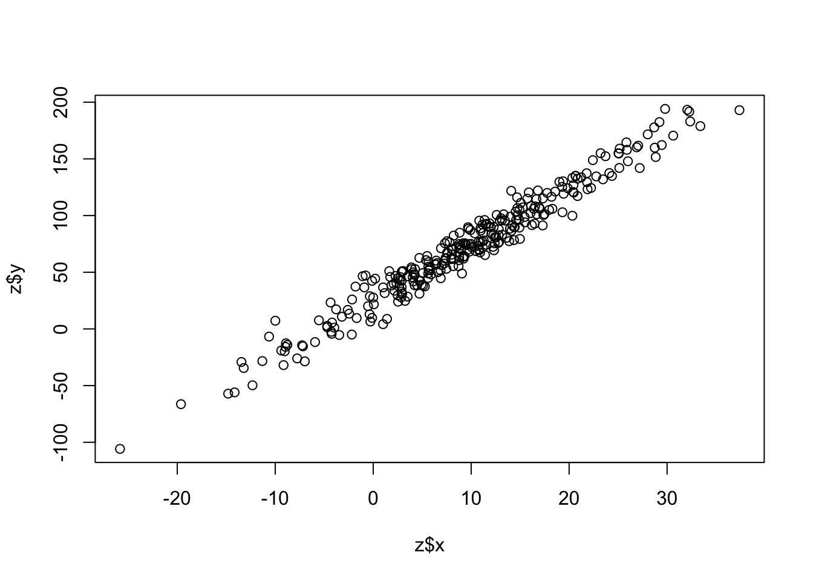
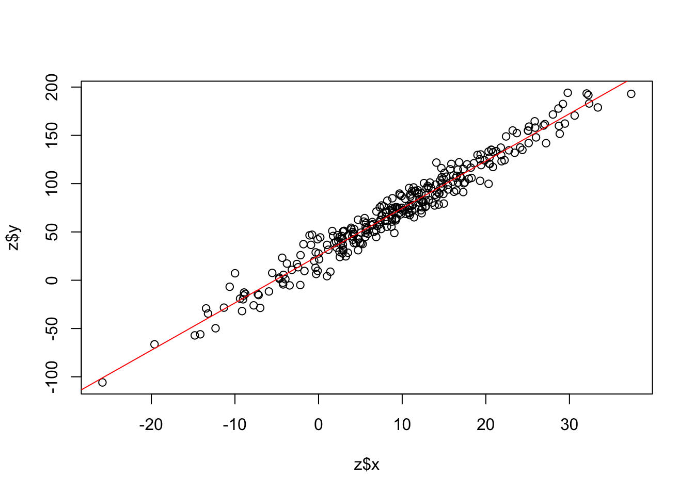

a <- 517 Getting to Know R and RStudio
| Learning Objectives: |
| Install and use R and RStudio |
| Use the fundamental features of the R language |
17.1 What is R, and why are we using it?
R is “a free software environment for statistical computing and graphics”. It is a full-fledged programming language (though a high level one). Many software packages have been built in R, and it is typically relatively easy to install and use them. R is very widely used across a variety of academic and industry settings, primarily for statistics and data science applications.
Using R and software packages developed for it, you will learn to
- Read, filter, and otherwise manipulate data.
- Do (some pretty specific) statistical analysis.
- Make a variety of visualizations of data and analysis results.
The first two are things you’ve already learned to do a bit of using bash and programs compiled for Linux, so why also learn to do them in R? In short, the tools developed for doing these things in R allow far more flexible and nuanced analysis, and the integration of the ability to make plots makes R a very powerful environment for efficiently learning from data.
If R has a weakness, it’s that it is largely oriented around the idea that datasets will be entirely loaded into memory (though there are exceptions). This means that in practice we don’t typically work with large raw sequence datasets in R, but do initial analysis using highly specific tools (assemblers, aligners, quantification software etc) and then bring the much smaller processed results into R for further analysis and visualization. Our count files are a great example of this. We have ~87G of raw data in our 75 sample transcriptomic dataset, but the count data we’ll ultimately analyze in R is only 40M.
The language most commonly compared to R is Python. Use cases overlap substantially, though python also has some wider, non-data oriented applications, and similar software packages have been developed for many applications in both languages. We are going to focus on R in this course. It’s not necessarily better (you can find endless internet debates about the merits of various languages if you’re into that sort of thing), but it will certainly be easier to get started with, and you have to start somewhere. It’s not uncommon for people in this field to learn more than one language, though certainly not everyone does.
17.2 Installing R and RStudio
There are four main ways you can interact with R.
- Interactively, by launching the interpreter that is distributed with it.
- Interactively, by running it in a terminal window.
- Interactively, in an integrated development environment (IDE).
- Non-interactively, by handing it a script or a set of commands, much like you would a bash script.
In this course, you will likely run R in all of these ways at one time or another, but we recommend that you generally run R on your local machine in an IDE, so you’ll need to install it there.
The IDE we recommend, and that most folks use for R is RStudio. RStudio provides facilities to edit and execute code, view plots and data, and manage your environment.
R is available on Xanadu, and it is simple to run using methods 2 and 4 above. On Xanadu, however, R will not be able to display plots for you as it will on your local machine. It is possible to run RStudio on Xanadu, but it’s a bit of a pain to start up (instructions here). If you find that your local machine is too resource-constrained and you’re having a hard time running RStudio there, this might be a better alternative. Talk to us if you think this is a problem for you.
Install R and RStudio on your local machine now, following these directions.
17.3 R paradigms
Something that makes R a bit complex is that there are two major paradigms for manipulating and visualizing data.
- base R: R is distributed with base functions and data structures for reading, writing, manipulating data, doing statistics, and plotting. It’s good to have a grasp of how these work.
tidyverse: The tidyverse is a set of software packages, or extensions, for R that implement a fundamentally different way of doing things. Tidyverse tools are incredibly powerful, and for many tasks have become the default way of approaching data in R.
We are going to introduce you to both approaches in this course, and we’ll use a mixture when analyzing data. Many well-established R packages do not output results in “tidy”-friendly format, and so sometimes it is quicker and easier to manage them in base than make them tidy. This probably makes little sense to you now, but it will become clear soon.
17.4 How we’re going to introduce you to R
Because R is so popular, there are numerous resources for learning it. For the coming sections of the lab manual, we will mostly send you off to work through some existing resources published elsewhere.
The way this will work is as follows:
- Watch a video introducing you to RStudio
- Work through a very brief introduction to the R language (much of this will be repeated in more depth in the next steps).
- Work through a more in depth introduction to base R using swirl.
- Work through parts of R for Data Science, 2nd edition.
17.5 An incredibly brief introduction to R
This will be a very quick introduction to base R features.
Open RStudio on your local machine, and follow along here. The code we go over can also be found in an R script here
Like bash, when you write code, you can denote comment lines with # that will be ignored by the R interpreter.
# use comment lines like this to mark up your code. R differs from bash in very dramatic ways. In bash, nearly everything is a file. Programs are files, they read input from files, and write output to files. The standard input, standard output, and standard error, even when not redirected to a file stored on a hard disk, are still essentially files.
17.5.1 Objects and expressions
In R, everything is an object. When you write R code, you compose objects into expressions that are evaluated by R. The product of an expression will be an object, though typically it will not be stored for later use unless you assign it to an object with a name.
Let’s look at a very simple expression. We’ll assign the number 5 to the object a using the assignment operator <-
You can see the contents of many objects by simply typing their names in the R console:
a[1] 5You can write mathematical expressions:
5 + 5[1] 10And assign the results of those expressions to an object:
a <- 5 + 5+ is a special type of object called an operator.
You can update objects:
a <- a + 5
a[1] 1517.5.2 Kinds of objects
There are many types of object in R. Objects used to store data are often referred to as data structures.
The most basic data structure is a vector. You can create them with the function c() (more on functions in a moment), which concatenates its arguments into a vector:
a <- c(1,2,3,4,5)
a[1] 1 2 3 4 5a is a numeric vector. We can also create character vectors:
b <- c("bear","dog","fox","cat","rat")
b[1] "bear" "dog" "fox" "cat" "rat" We can access subsets of vectors with [] notation, grabbing (or excluding) elements or ranges of elements:
a[2][1] 2b[2:4][1] "dog" "fox" "cat"b[-3][1] "bear" "dog" "cat" "rat" Another common data structure is a list. You can create them with the function list():
g <- list(x=a,y=b)
g$x
[1] 1 2 3 4 5
$y
[1] "bear" "dog" "fox" "cat" "rat" In this case we’ve named the two elements of the list x and y.
We can access ranges of list elements as with vectors, but if we want to extract just the contents of a single list element, we need to use double square brackets notation: [[]], or $ notation:
g[1] # returns a list with 1 element! the others return vectors. $x
[1] 1 2 3 4 5g[[1]][1] 1 2 3 4 5g[["x"]][1] 1 2 3 4 5g$x[1] 1 2 3 4 5We also have matrices (also called arrays):
d <- matrix(nrow=5,ncol=2,data=1:10)
d [,1] [,2]
[1,] 1 6
[2,] 2 7
[3,] 3 8
[4,] 4 9
[5,] 5 10This matrix is 2-dimensional, so we provide two indexes, [row, column], to access parts of it:
d[1,][1] 1 6d[,1][1] 1 2 3 4 5d[1,2][1] 6If we leave one index blank, it will return all elements of that dimension.
Possibly the most important data structure in R is the data frame:
e <- data.frame(x=a,y=b)
e x y
1 1 bear
2 2 dog
3 3 fox
4 4 cat
5 5 ratData frames are superficially a bit like matrices. Matrices, however, require data in all elements to be the same type (e.g. all character or all numeric). Each column of a data frame can have a different type.
You can access subsets of data frames in diverse ways: with 2-d bracket notation as with matrices, or you can subset columns with the same types of notations you would with lists (a data frame is a special type of list).
We’ve seen the basic R data structures, and hinted that there are different fundamental types of data. There are more than we’ve seen though. There is:
- numeric data (e.g. 1,2,3,4…)
- character data (e.g. “bear”, “dog”, “fox”…)
- logical data (TRUE / FALSE)
- factor or categorical data, which looks like character data on inspection, but has defined levels (e.g. every instance of “fox” in a factor vector is recognized as belonging to one category)
A critical type of object we have seen but not discussed yet, is the function. Functions are objects that contain code. You can use them to manipulate other objects.
A very basic function is is(), which we can use to ask about the type, or class to which an object belongs:
is(a)[1] "numeric" "vector" is(d)[1] "matrix" "array" "structure" "vector" is(e)[1] "data.frame" "list" "oldClass" "vector" is(is)[1] "function" "OptionalFunction" "PossibleMethod" There are often several classes assigned to an object, the first few classes will give you a good idea of what you’re dealing with.
You can see the contents of many functions by simply typing the function name in the console without (), though at this point please do not feel obligated to try to understand the code printed below!
isfunction (object, class2)
{
class1 <- class(object)
S3Case <- length(class1) > 1L
if (S3Case)
class1 <- class1[[1L]]
if (missing(class2))
return(extends(class1))
stopifnot(length(class2) == 1L)
class1Def <- getClassDef(class1)
class2Def <- NULL
if (!is.character(class2)) {
class2Def <- class2
class2 <- class2Def@className
}
if (is.null(class1Def))
return(inherits(object, class2))
if (is.null(class2Def)) {
class2Def <- getClassDef(class2, .classDefEnv(class1Def),
packageSlot(class2) %||% getPackageName(topenv(parent.frame())))
}
S3Case <- S3Case || (is.object(object) && !isS4(object))
S3Case <- S3Case && (is.null(class2Def) || class2 %in% .BasicClasses ||
extends(class2Def, "oldClass"))
if (S3Case)
inherits(object, class2)
else if (.identC(class1, class2) || .identC(class2, "ANY"))
TRUE
else {
if (!is.null(contained <- class1Def@contains[[class2]]))
contained@simple || contained@test(object)
else if (is.null(class2Def))
FALSE
else if (!.identC(class(class2Def), "classRepresentation") &&
isClassUnion(class2Def))
any(c(class1, names(class1Def@contains)) %in% names(class2Def@subclasses))
else {
ext <- class2Def@subclasses[[class1]]
!is.null(ext) && (ext@simple || ext@test(object))
}
}
}
<bytecode: 0x143e706a8>
<environment: namespace:methods>Some functions have their code partially obscured, or are actually written in a lower level programming language (such as C, for speed). See a discussion here
You can create your own functions with function(arguments){code}, and assign them to objects like this:
x10 <- function(x){
z <- x * 10
return(z)
}
x10(10)[1] 100Writing a function for an action that you do repeatedly can help tidy up code and make it easier to understand.
17.5.3 Vector arithmetic
R can do vector operations:
a <- 1:5
a + a[1] 2 4 6 8 10a^2[1] 1 4 9 16 25a + 100[1] 101 102 103 104 105If you try to combine vectors that are not multiples of one another, you’ll get a warning, but R will recycle values to make it work:
a <- 1:5
b <- 1:4
a + bWarning in a + b: longer object length is not a multiple of shorter object
length[1] 2 4 6 8 6If you see this warning, it’s almost certain you’ve done something you didn’t intend to and you should figure out what’s gone wrong.
17.5.4 Logical data
Logical data are special. We can create a logical vector with a logical expression:
a <- 1:20
l <- a > 5
l [1] FALSE FALSE FALSE FALSE FALSE TRUE TRUE TRUE TRUE TRUE TRUE TRUE
[13] TRUE TRUE TRUE TRUE TRUE TRUE TRUE TRUELogical data can be subjected to numerical operations (TRUE = 1; FALSE = 0):
l[1:10] + 1 [1] 1 1 1 1 1 2 2 2 2 2sum(l)[1] 1517.5.5 Index vectors
We can use vectors to subset objects.
d <- matrix(nrow=5,ncol=2,data=1:10)
l <- d[,1] > 3
d[l,] [,1] [,2]
[1,] 4 9
[2,] 5 10You can also use numeric vectors, or character vectors if the rows or columns have names. ### Loops, apply(), and if/else
We’re not going to cover these in this very brief introduction, but you will see them later!
17.5.6 Getting Documentation
Base R functions and most R packages come with documentation. This is usually helpful, but can be hard to parse when you’re just getting started. You can access it by:
?sumIn RStudio it will open in the Help tab in the lower right panel. If you’re in a terminal window, you can exit the help by pressing q.
To get documentation for operators, you need to use backticks:
?`+`17.5.7 Analysis and plotting
We’ll do a very simple analysis here to demonstrate some basic functions for modeling and plotting.
First simulate some data. rnorm() draws random deviates from a normal distribution.
x <- rnorm(n=300,mean=10,sd=10)
y <- x * 5 + rnorm(n=300,mean=25,sd=10)
z <- data.frame(x,y)Make histograms and a scatter plot:
hist(z$x)
hist(z$y)
plot(z$x,z$y)
Fit a linear model:
model <- lm(y ~ x, z)Summarize the results:
summary(model)
Call:
lm(formula = y ~ x, data = z)
Residuals:
Min 1Q Median 3Q Max
-26.2364 -7.5907 0.1327 6.6456 30.6582
Coefficients:
Estimate Std. Error t value Pr(>|t|)
(Intercept) 25.49717 0.79689 32.00 <2e-16 ***
x 4.89787 0.05786 84.66 <2e-16 ***
---
Signif. codes: 0 '***' 0.001 '**' 0.01 '*' 0.05 '.' 0.1 ' ' 1
Residual standard error: 10.07 on 298 degrees of freedom
Multiple R-squared: 0.9601, Adjusted R-squared: 0.9599
F-statistic: 7167 on 1 and 298 DF, p-value: < 2.2e-16Add a trendline to our scatter plot:
plot(z$x,z$y)
abline(model,col="red")
17.5.8 Pipes
A feature that has been added to base R (versions > 4.0), but which used to be specific to the tidyverse paradigm is the pipe. The base R pipe operator is |>. It works just like the Linux pipe, passing the output of one function to the next as input, so it should feel very familiar:
lm(y ~ x, z) |> summary()
Call:
lm(formula = y ~ x, data = z)
Residuals:
Min 1Q Median 3Q Max
-26.2364 -7.5907 0.1327 6.6456 30.6582
Coefficients:
Estimate Std. Error t value Pr(>|t|)
(Intercept) 25.49717 0.79689 32.00 <2e-16 ***
x 4.89787 0.05786 84.66 <2e-16 ***
---
Signif. codes: 0 '***' 0.001 '**' 0.01 '*' 0.05 '.' 0.1 ' ' 1
Residual standard error: 10.07 on 298 degrees of freedom
Multiple R-squared: 0.9601, Adjusted R-squared: 0.9599
F-statistic: 7167 on 1 and 298 DF, p-value: < 2.2e-16For many years, a different pipe operator was the only one available: %>% It was part of the package magrittr, and then later the tidyverse set of packages. You will probably still see it around a lot and there are some differences.
17.5.9 Installing packages
A huge amount of R’s functionality comes from packages or extensions developed by 3rd parties. There are a several places you can get them from, but the biggest by far is the repository **CRAN**. To install packages from CRAN you can do install.packages("package_name")
Try to install the tidyverse (actually several packages):
install.packages("tidyverse")Once an R package is installed, it will be available in any R session by typing library("package_name"). There may be messages printed when loading R packages, e.g.:
library(tidyverse)── Attaching core tidyverse packages ──────────────────────── tidyverse 2.0.0 ──
✔ dplyr 1.1.4 ✔ readr 2.1.5
✔ forcats 1.0.0 ✔ stringr 1.5.1
✔ ggplot2 3.5.1 ✔ tibble 3.2.1
✔ lubridate 1.9.4 ✔ tidyr 1.3.1
✔ purrr 1.0.4
── Conflicts ────────────────────────────────────────── tidyverse_conflicts() ──
✖ dplyr::filter() masks stats::filter()
✖ dplyr::lag() masks stats::lag()
ℹ Use the conflicted package (<http://conflicted.r-lib.org/>) to force all conflicts to become errorsWe will also use several packages from Bioconductor. Bioconductor has it’s own installation routine:
We’ll talk more about Bioconductor later, but for now, know that each package has it’s own splash page with installation instructions. Try to install DESeq2. Bioconductor packages typically have many dependencies which will also be installed.
17.6 Organizing R Projects
We’ll have more to say about this later, but for now, a few tips on R and RStudio.
- Create new RStudio projects for each new project. When you opened RStudio for the first time, it created a project for you. Perhaps you specifically chose a project directory, perhaps you used whatever it suggested. In the future, when you actually do data analysis, you should be mindful about your R environment. Using one R environment to do all your analysis is a recipe for disaster.
- As a general rule, don’t save objects in your R environment/workspace. Instead, write scripts and save your code. When you quit R or RStudio to go work on something else, or to switch to another R/RStudio project, just let all that junk in your workspace go. If you need it, the code to create it should be written into a script that you can run from top to bottom to recreate it without manual intervention. When you come back to the project, execute the code again to regenerate the objects. If you do this, it will ensure that you are doing analysis that at least you can reproduce. You will turn up errors and inconsistencies you didn’t know were there. In fact, we recommend periodically closing and restarting R and re-running your code just to ensure things are working the way you expect. The very last thing you want is to have some object named
DEFinalResultsand not really know how you arrived at those results.
17.7 R Resources
R for data science, 2nd edition Advanced R 2nd edition R in a nutshell YaRrr! The Pirate’s Guide to R